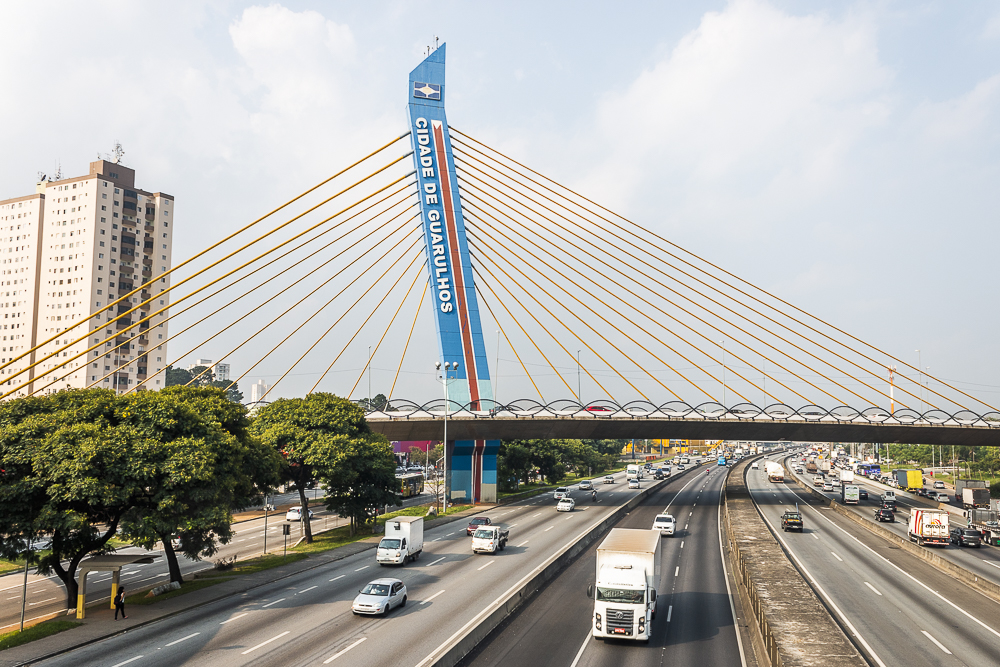
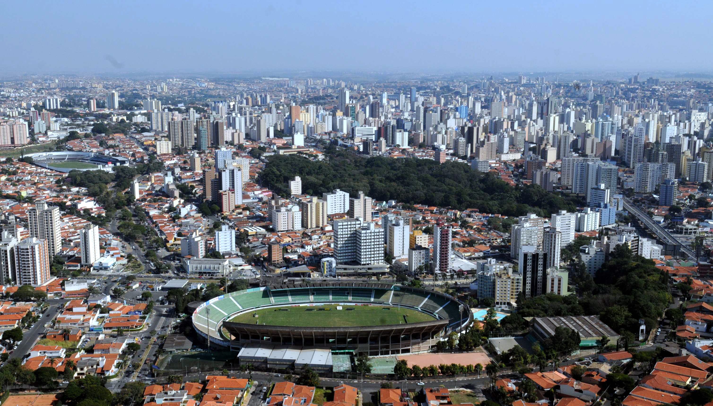
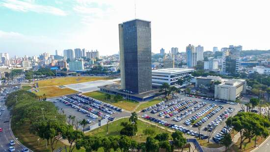
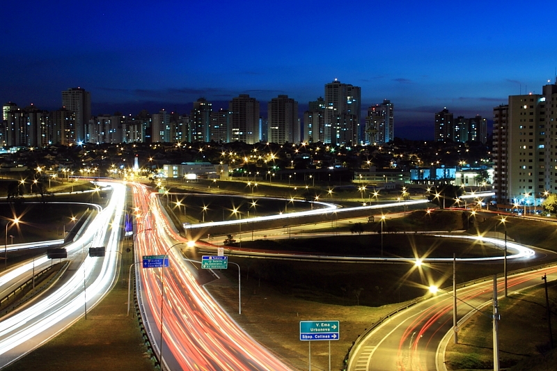
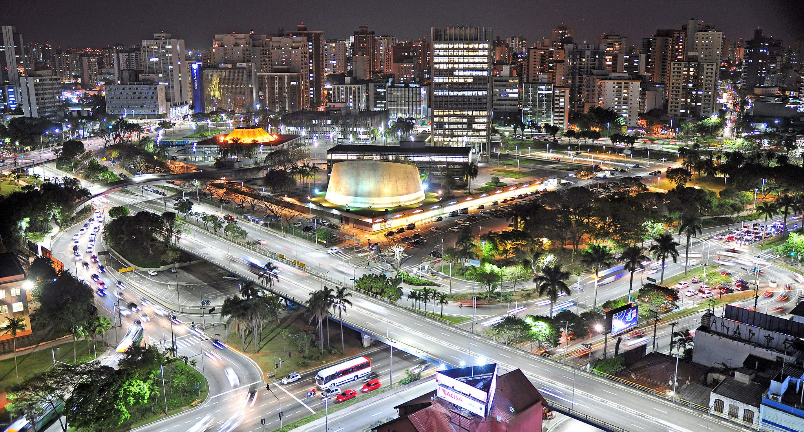
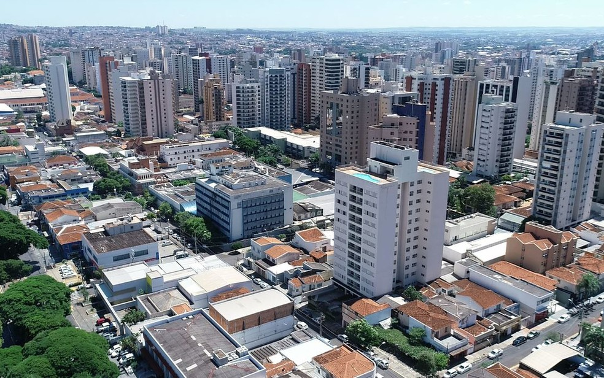
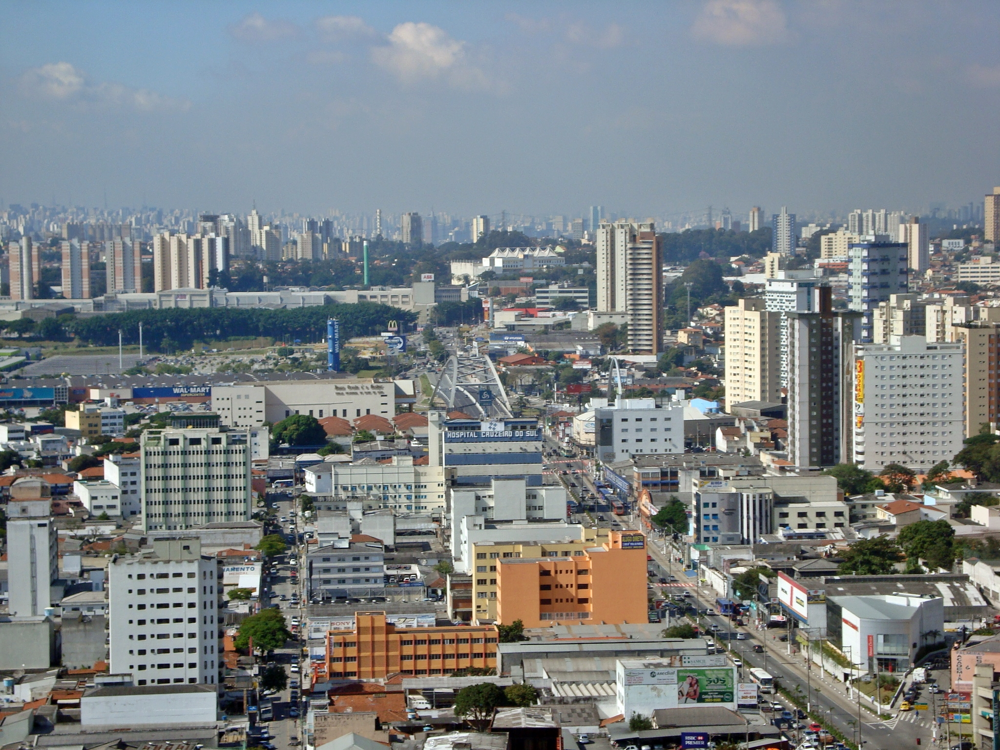
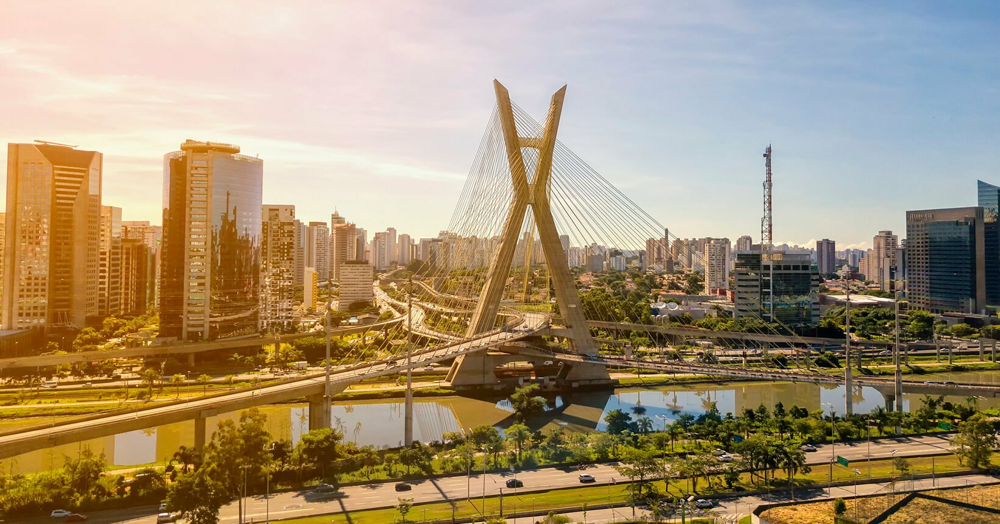

A história de São Paulo inicia-se no século XVI, com a chegada de navegadores portugueses e espanhóis, com o descobrimento do Brasil. ... No século XVII, os bandeirantes paulistas intensificaram a exploração do interior da colônia, o que acabou por expandir os domínios territoriais dos portugueses na América do Sul.
Guarulhos é um município da Região Metropolitana de São Paulo, no estado de São Paulo, no Brasil. É a segunda cidade mais populosa do estado, a 13ª mais populosa do Brasil e a 53ª mais populosa do continente americano, com 1 392 121 habitantes, segundo estimativa do Instituto Brasileiro de Geografia e Estatística (IBGE) para 1.º de julho de 2020.
Guarulhos foi fundada em 8 de dezembro de 1560, pelo padre jesuíta Manuel de Paiva, com a denominação de Nossa Senhora da Conceição. Sua origem está ligada à de cinco outros povoamentos que tinham, como principal objetivo, defender o povoado de São Paulo dos Campos de Piratininga contra um possível ataque dos Tamoios.
É a cidade não capital de estado mais populosa do Brasil e é considerada a 12ª cidade mais rica do Brasil. Em 2016, registrou um Produto Interno Bruto (PIB) na ordem de 53,9 bilhões de reais, o que representou mais de 1% de todo PIB brasileiro na época.[6] além de deter o 4º maior produto interno bruto (PIB) de seu estado e o 12º maior do país.
Campinas é um município brasileiro no interior do estado de São Paulo, Região Sudeste do país. Pertence à microrregião e mesorregião homônimas, distante 99 km a noroeste de São Paulo, capital estadual. Ocupa uma área de 797,6 km², da qual 238,323 km² estão em perímetro urbano e os 559,277 km² restantes constituem a zona rural. Em 2020, sua população foi estimada pelo Instituto Brasileiro de Geografia e Estatística em 1 213 792 habitantes, sendo o terceiro município mais populoso de São Paulo (ficando atrás de Guarulhos e da capital) e o décimo quarto de todo o país. Aparece em quinto lugar entre 100 municípios analisados pelo Índice das Melhores e Maiores Cidades Brasileiras, o BCI100, elaborado pela Delta Economics & Finance com base nos dados do Censo 2010 do IBGE e do Ideb.
Campinas foi fundada em 14 de julho de 1774. Entre o final do século XVIII e o começo do século XX, a cidade teve o café e a cana-de-açúcar como importantes atividades econômicas. Porém, desde a década de 1930, a indústria e o comércio são as principais fontes de renda, sendo considerada um polo industrial regional. Atualmente, é formada por seis distritos, além da sede, sendo, ainda, subdividida em 14 administrações regionais, cinco regiões e vários bairros.
Décima cidade mais rica do Brasil, hoje é responsável por pelo menos 15% de toda a produção científica nacional, sendo o terceiro maior polo de pesquisa e desenvolvimento brasileiro. Tem também diversos atrativos turísticos, com valor histórico, cultural ou científico, como museus, parques e teatros. A Orquestra Sinfônica Municipal de Campinas, fundada em 1974, é considerada uma das principais do país.
São Bernardo do Campo é um município brasileiro do estado de São Paulo, na Mesorregião Metropolitana de São Paulo e microrregião de São Paulo. Pertence a Zona Sudeste da Grande São Paulo, em conformidade com a lei estadual nº 1.139, de 16 de junho de 2011 e, consequentemente, com o Plano de Desenvolvimento Urbano Integrado da Região Metropolitana de São Paulo (PDUI),[17] e também à região não-oficial do Grande ABC.
A área total do município é de 409,88 km² e sua população de acordo com estimativas do Instituto Brasileiro de Geografia e Estatística (IBGE) de 2018, é de 833 240 habitantes, o que resulta em uma densidade demográfica de 2024,33 hab/km². O município é formado pela sede e pelo distrito de Riacho Grande.
A origem da cidade remonta a 1553, quando é oficializada a Vila de Santo André da Borda do Campo, fundada pelo português João Ramalho, junto a seu sogro Tibiriçá. A Vila foi o primeiro núcleo de povoamento do território brasileiro fora do litoral. O nome do município provém da Fazenda de São Bernardo, fundada pelos monges beneditinos em 1717, origem da ocupação moderna da cidade.
São José dos Campos (pronúncia em português: /sɐ̃w̃ ʒuˈzɛ dus ˈkɐ̃pus/) é um município brasileiro no interior do estado de São Paulo. Está situado no Vale do Paraíba Paulista, a leste da capital do estado, distando desta cerca de 81 km. É sede da Região Metropolitana do Vale do Paraíba e Litoral Norte e ocupa uma área de 1 099,409km², da qual 353,9 km² estão em perímetro urbano. Em 2020, sua população foi estimada pelo IBGE em 729 737 habitantes,[2] sendo o quinto mais populoso de São Paulo e o 23.º de todo o país, além de ser o segundo município mais populoso do interior do Brasil, ficando atrás somente de Campinas. O município está integrado — junto com as regiões metropolitanas de São Paulo, Campinas, Sorocaba e Baixada Santista — ao Complexo Metropolitano Expandido, uma megalópole que ultrapassa os trinta milhões de habitantes (cerca 75% da população paulista) e que é a primeira aglomeração urbana do tipo no hemisfério sul.
São José dos Campos foi elevado à categoria de vila em 1767. No decorrer do século XIX a agricultura desenvolveu-se no município, com destaque para o café, principalmente a partir da década de 1880. Porém na segunda metade do século XX a indústria ganhou força, sendo este o momento que a cidade descobre sua vocação para a área da tecnologia.
Além da importância econômica ainda é um importante centro cultural do Vale do Paraíba. A Reserva Ecológica Augusto Ruschi, o distrito de São Francisco Xavier e o Banhado configuram-se como grandes áreas de preservação ambiental, enquanto que o Parque Santos Dumont, o Parque da Cidade e o Parque Vicentina Aranha são relevantes pontos de visitação localizados na zona urbana, além dos projetos e eventos culturais realizados pela Fundação Cultural Cassiano Ricardo (FCCR), órgão responsável por projetar a vida cultural joseense.
 Veja o hino!Santo André é um município brasileiro da Região do Grande ABC, localizado na Zona Sudeste da Grande São Paulo, parte da Região Metropolitana de São Paulo, em conformidade com a lei estadual nº 1.139, de 16 de junho de 2011 e, consequentemente, com o Plano de Desenvolvimento Urbano Integrado da Região Metropolitana de São Paulo (PDUI).
Sua população estimada para 1.º de julho de 2020 era de 721 368 habitantes, ocupando uma área de 175,782km².
Santo André é a décima quinta cidade brasileira mais desenvolvida, e a oitava cidade mais desenvolvida do estado de São Paulo, segundo a ONU. É também a quinta melhor cidade do país onde criar filhos.
Ribeirão Preto (pronúncia em português: /ʁibejˈɾɐ̃w ˈpɾetu/) é um município brasileiro sede da Região Metropolitana de Ribeirão Preto (RMRP), no interior do estado de São Paulo, Região Sudeste do país. Pertence à Mesorregião e Microrregião de Ribeirão Preto, localizando-se a nordeste do estado, distando da Capital do Estado cerca de 315 km. Ocupa uma área de 650,916 km², sendo que 127,309 km² estão em perímetro urbano. Com 711 825 habitantes, é a nona cidade mais populosa do País sem contar as capitais – no geral é a 27ª e no Estado é a sétima, incluindo a capital paulista, segundo estimativa populacional calculada pelo IBGE para 2020, quando a população ribeirão-pretana cresceu 1,21% em relação ao valor do ano anterior. Este índice é superior ao nacional, de 0,77% e também está acima do estadual, de 0,81%.
A cidade tem uma temperatura média anual de 23,2 °C e na vegetação original do município predomina a mata Atlântica. Com 99,7% de seus habitantes vivendo na zona urbana, o município contava em 2009 com 95 estabelecimentos de saúde (SUS). O seu Índice de Desenvolvimento Humano (IDH) em 2010 era de 0,800, considerando-se assim como elevado em relação ao país, sendo o vigésimo segundo maior do estado. Várias rodovias ligam Ribeirão Preto a diversas cidades paulistas, tais como a Rodovia Anhanguera e a Rodovia Cândido Portinari, havendo ainda disponibilidade de ferrovias e um aeroporto, denominado Doutor Leite Lopes.
Ribeirão Preto foi fundada em 1856, neste período a região recebia muitos mineiros que saíam de suas terras já esgotadas para a mineração e procuravam pastagens para a criação de gado. No começo do século XX, a cidade passou a atrair imigrantes, que foram trabalhar na agricultura ou nas indústrias abertas na década de 1910. O café, que foi por algum tempo uma das principais fontes de renda, se desvaloriza a partir de 1929, perdendo espaço para outras culturas e principalmente para o setor industrial. Na segunda metade do século XX foram incrementados investimentos nas áreas de saúde, biotecnologia, bioenergia e tecnologia da informação, sendo declarada em 2010 como "polo tecnológico". Essas atividades atualmente fazem com que Ribeirão Preto tenha o 21º maior PIB brasileiro.
Osasco (pronúncia AFI: [o'zaskʊ]) é um município brasileiro localizado na Região Metropolitana de São Paulo, no estado de São Paulo, no Brasil. Nascido como um bairro da capital paulista no final do século XIX, tornou-se município emancipado após um plebiscito em 1962. Ocupa uma área de 64,954 km², e sua população estimada no ano de 2019 era de 698 418 habitantes, sendo o 8º mais populoso do estado de São Paulo
Possui importante atividade econômica nos setores industrial, comercial e de serviços. Conforme o censo do IBGE, com dados de 2017, Osasco possui o 6º maior Produto Interno Bruto do Brasil e o 2º maior do Estado de São Paulo, ficando à frente de muitas capitais estaduais brasileiras, como Salvador, Fortaleza e Recife,[8] sendo a cidade não capital com o mais alto PIB da nação naquele ano.
O lema da cidade é Urbs labor, frase latina que significa Cidade trabalho, e seu padroeiro é Santo Antônio, sendo 13 de junho (data comemorativa do santo) feriado municipal.
Sorocaba (pronuncia-se AFI: [so̞ɾo̞ˈkabɐ]) é um município brasileiro no interior do estado de São Paulo. É a quarta mais populosa do interior paulista (precedida por Campinas, São José dos Campos e Ribeirão Preto) e a mais populosa da região sudeste paulista com uma população de 687.357 habitantes, estimada pelo IBGE para 2020,[8] sendo uma capital regional.
Possui uma área de 450,38 km². O município está integrado — junto com a Grande São Paulo, a Região Metropolitana de Campinas a Região Metropolitana da Baixada Santista e a Região Metropolitana do Vale do Paraíba e Litoral Norte — ao Complexo Metropolitano Expandido, uma megalópole que ultrapassa os 30 milhões de habitantes (cerca 75% da população paulista) e que é a primeira aglomeração urbana do tipo no hemisfério sul. A Região Metropolitana de Sorocaba é composta por 26 municípios que somam aproximadamente 2,06 milhões de habitantes.
A cidade é um importante polo industrial do estado de São Paulo e do Brasil, sendo que sua produção industrial chega a mais de 120 países, atingindo um PIB acima dos R$ 32 bilhões, o décimo nono maior do país, a frente de capitais como São Luís, Belém, Vitória, Natal e Florianópolis.[8] As principais bases de sua economia são os setores de indústria, comércio e serviços, com mais 22 mil empresas instaladas, sendo mais de duas mil delas indústrias.
Mauá é um município da Região Metropolitana de São Paulo, no estado de São Paulo, no Brasil. Pertence à região do ABC Paulista, na Zona Sudeste da Grande São Paulo, em conformidade com a lei estadual nº 1.139, de 16 de junho de 2011 e, consequentemente, com o Plano de Desenvolvimento Urbano Integrado da Região Metropolitana de São Paulo (PDUI).[8] A densidade demográfica é de 6 463,7 habitantes por quilômetro quadrado. Porém a densidade urbana é bem maior, já que um terço do município é área industrial e 10% pertence à área rural e ao Parque Estadual da Serra do Mar. Em 2014, era o 20° município do estado em produto interno bruto, e em 2018 o 11º em população, com 468 148 habitantes. Mauá está entre as 50 cidades mais populosas de todo o Brasil.
O tupinólogo Eduardo de Almeida Navarro sugere que o topônimo "Mauá" pode provir de "Magûeá", que era o nome de uma aldeia tamoia que se localizava na baía de Guanabara no Século XVI. Originalmente, o nome "Mauá" designava uma área onde hoje situa-se o bairro de Mauá, em Magé, onde Irineu Evangelista de Souza construiu um grande porto. O imperador dom Pedro II, reconhecendo a importância da obra, nomeou-o barão de Mauá.
Na criação do distrito de Mauá, durante o processo de emancipação, o nome "Mauá" passou a designar a estação local e o povoado que surgiu ao seu redor em substituição ao antigo "Pilar", que fazia referência ao Caminho do Pilar (antigo nome da Avenida Barão de Mauá), que ligava a vila de São Bernardo à Igreja do Pilar.

A fundação da cidade de São Paulo aconteceu no local conhecido como Pátio do Colégio, no dia 25 de janeiro de 1554. A edificação foi construída pela missão jesuítica liderada pelos padres José de Anchieta e Manuel da Nóbrega, com a intenção de catequizar as populações indígenas que viviam na região.
A cidade de São Paulo abriga a sede do governo do estado, localizado na região Sudeste. São Paulo possui atualmente área de 1.521,110 km², sendo a 9ª em extensão do estado. O município é considerado sede da Região Metropolitana de São Paulo, composta, no total, por 39 cidades e mais de 20 milhões de habitantes.
O clima predominante é o Subtropical Úmido, caracterizado pelas temperaturas amenas, com média de 22 ºC, e chuvas bem distribuídas ao longo do ano. O município, entretanto, apresenta algumas particularidades com relação ao tempo.
